(This demo video has been sped up 2X for brevity. Please see video
settings to lower speed.)
Abstract
Generative adversarial networks, such as StyleGANs, can be trained to controllably generate audio
textures by conditioning the model with labeled data. While datasets for audio textures can be
easily recorded, semantically labeling them is difficult due to human annotator subjectivity. Thus,
to controllably generate audio textures, there is a need to automatically infer semantic factors of
variation in the latent space of a StyleGAN trained on unlabeled textures.
In this paper, we propose an example-based framework to determine vectors to guide texture generation based on user-defined semantic attributes. By synthesizing a few synthetic examples to indicate the presence or absence of a semantic attribute, we can infer the guidance vectors in the latent space of a StyleGAN to control that attribute during generation. Our results show that our method is capable of finding user-defined and perceptually relevant guidance vectors for controllable generation for both discrete event-based as well as continuously varying audio textures.
In this paper, we propose an example-based framework to determine vectors to guide texture generation based on user-defined semantic attributes. By synthesizing a few synthetic examples to indicate the presence or absence of a semantic attribute, we can infer the guidance vectors in the latent space of a StyleGAN to control that attribute during generation. Our results show that our method is capable of finding user-defined and perceptually relevant guidance vectors for controllable generation for both discrete event-based as well as continuously varying audio textures.
Index
- 1. Perceptually Guided Examples for Greatest Hits Dataset
- 2. Perceptually Guided Examples for Water
- 3. Experimental Setup (Paper Section IV.B)
- 3.1 UMAP Clusters for Real and Synthetic Sounds based on semantic attributes(Paper Section IV.B)
- 3.2 Codebase (Paper Section IV.B)
- 4. Re-scoring Classifier Details (Paper Section IV.C)
- 5. Ablation studies - Gaver Sound Synthesis (Paper Section IV.E.1)
- 6. Ablation studies - Effect of Scalar α (Paper Section IV.E.1)
- 7. SeFa Failure Modes (Paper Section IV.E.2)
- 8. Listening Test Interfaces (Paper Section IV.E.3)
- 9. Examples for Selective Semantic Attribute Transfer (Paper Section V)
- 10. Limitations: Approaching semantic edits using text-to-audio models (Paper Section VI)
1. Perceptually Guided Examples for Greatest Hits Dataset
For the GreatestHits dataset, we develop semantic attribute clusters, prototypes and directions
for attributes of -
- Brightness (whether the sound contains mostly high frequency components or is dark or dull containing low frequency components),
- Rate (whether the number of impact sounds in a sample is high or low), and
- Impact Type (whether the impact sounds are sharp hits or scratchy sounds).
Guiding Brightness
See samples below. The leftmost sounds are randomly generated from the latent space and are edited
using the direction vector for Brightness.
The leftmost sounds are brighter than the rightmost sounds.
As you move to the right, the sounds become progressively dark or dull.
The leftmost sounds are brighter than the rightmost sounds.
As you move to the right, the sounds become progressively dark or dull.
sample 1


sample 2

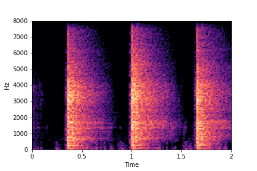


sample 3


sample 4


sample 5


Guiding Impact Type
See samples below. The leftmost sounds are randomly generated from the latent space and are edited
using the direction vector for Impact Type.
The leftmost sounds are sharper hits as compared to the rightmost sounds.
As you move to the right, the sounds become progressively scratchier.
The leftmost sounds are sharper hits as compared to the rightmost sounds.
As you move to the right, the sounds become progressively scratchier.
sample 1


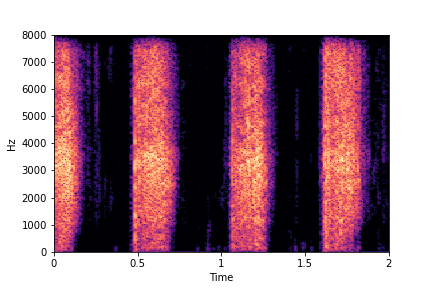

sample 2


sample 3


sample 4


sample 5


Guiding Rate
See samples below. The leftmost sounds are randomly generated from the latent space and are edited
using the direction vector for Rate.
The leftmost sounds are lower rate as compared to the rightmost sounds.
As you move to the right, the sounds become progressively of higher rate (i.e. more number of impacts in the sample).
The leftmost sounds are lower rate as compared to the rightmost sounds.
As you move to the right, the sounds become progressively of higher rate (i.e. more number of impacts in the sample).
sample 1


sample 2


sample 3


sample 4


sample 5

Guided examples for Water
For this dataset, we develop semantic attribute clusters and directions for the continuously valued
attribute of fill-level of the container.
The leftmost sounds are that of water filling an empty container (i.e. fill-level=0).
As you move to the right, the the fill-level progressively increases to finally fill-level=10.
As you move to the right, the the fill-level progressively increases to finally fill-level=10.
Guiding Water Fill-Level
sample 1


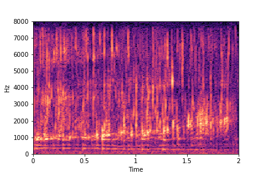
sample 2


Listening Test Interfaces (used on Mechanical Turk)
| Interface to measure perceptual linearity for Water Dataset (Please click on the image) |
Interface to measure attribute change for Greatest Hits
Dataset (Please click on the image) |
|---|---|
Examples for Selective Semantic Attribute Transfer
This idea is inspired from applications such as photoshop, where a user can
select an object and use a brush tool to pick the color of the object
and transfer the color to another object. With selective semantic attribute transfer,
we would like to select a semantic attribute (such as say brightness) from a reference
sample
and transfer it to the target sample without changing other attributes or the time domain
structure of the original sample.
Example 1: Transfer
Brightness from Brightness Reference Sample
(row 2, column 1) to Target Sample (all top row samples).
Note that only brightness is transferred/changed in the resulting samples. Other attributes such as location of impacts (time axis), rate and impact type remain the same as in Target Sample.
Note that only brightness is transferred/changed in the resulting samples. Other attributes such as location of impacts (time axis), rate and impact type remain the same as in Target Sample.
Target Samples
Transfer Brightness Example

Brightness
Reference Sample
Result:
Target Sample + Brightness Transferred from Reference Sample


Example 2: Transfer Impact
Type from Impact Type Reference Sample
(row 2, column 1) to Target Sample (all top row samples).
Note that only impact type is transferred/changed in the resulting samples. Other attributes such as location of impacts (time axis), rate and brightness remain the same as in Target Sample.
Note that only impact type is transferred/changed in the resulting samples. Other attributes such as location of impacts (time axis), rate and brightness remain the same as in Target Sample.
Target Samples
Transfer Impact Type Example


Impact
Type Reference Sample
Result:
Target Sample + Impact Type Transferred from Reference Sample

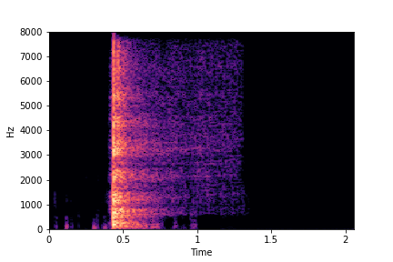

Example 3: Transfer
Rate from Rate Reference Sample
(row 2, column 1) to Target Sample (all top row samples).
Note that only rate is transferred/changed in the resulting samples. Other attributes such as location of the first impact (along time axis), brightness and impact type remain the same as in Target Sample.
Note that only rate is transferred/changed in the resulting samples. Other attributes such as location of the first impact (along time axis), brightness and impact type remain the same as in Target Sample.
Target Samples
Transfer Rate Example


Rate
Reference Sample
Result:
Target Sample + Rate Transferred from Reference Sample


SeFa failure modes
Semantic Factorization algorithm or SeFa (see references in paper) scores lower than our method in
terms of
re-scoring accuracy. This can be attributed to
the tendency of the algorithm to generate out-of-distribution sounds or have required effect on only
few samples.
SeFa failure mode for Greatest Hits - Impact Type
Though SeFa Dimension 2 (See Table 3 in paper) records the highest rescoring accuracy for the
change in impact type in sounds, we can qualitatively
see that this dimension can change only scratches to sharp hits. Sharp hits, on the other hand,
either do not change or go out-of-distribution (OOD)
instead of changing to scratches.
The leftmost samples below are sharp hits. As we go progressively towards the right the samples either do not change or go OOD.
The leftmost samples below are sharp hits. As we go progressively towards the right the samples either do not change or go OOD.
sample 1

sample 2


sample 3

sample 4

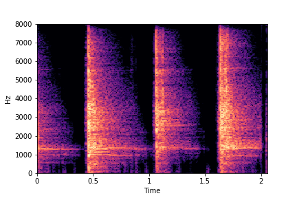

SeFa failure mode for Greatest Hits - Brightness
Though SeFa Dimension 3 (See Table 2 in paper) records the highest rescoring accuracy for the
change in brightness in sounds, we can qualitatively
see that this dimension does not change all randomly generated samples. Furthermore, for some
samples change in brightness is associated with lowering
rate.
The leftmost samples below are sharp hits. As we go progressively towards the right the samples either do not change or quickly go OOD before effectively modifying the attribute.
The leftmost samples below are sharp hits. As we go progressively towards the right the samples either do not change or quickly go OOD before effectively modifying the attribute.
sample 1


sample 2
sample 3
sample 4


SeFa failure mode for Water - fill-level
For the Water dataset, SeFa finds the second dimension (see Table 3 in paper) to be associated
with fill-level.
The most prominent dimension - i.e., the dimension with the highest Singular Value (dimension 0) - is associated with "perpetually filling" of the water container, while never reaching fill-level=10 (or full container). The other dimension (dimension 2) is associated with "perpertually unfilling" of the water container, while never leaving fill-level=10 or never reaching fill-level=0.
Whimsicial, sure, but not controllable. Makes one wonder, especially for dimension 0 which has the highest Singular Value (from the eigendecomposition of weights), if not fill-level then what other factor of variation did SeFa find?
The most prominent dimension - i.e., the dimension with the highest Singular Value (dimension 0) - is associated with "perpetually filling" of the water container, while never reaching fill-level=10 (or full container). The other dimension (dimension 2) is associated with "perpertually unfilling" of the water container, while never leaving fill-level=10 or never reaching fill-level=0.
Whimsicial, sure, but not controllable. Makes one wonder, especially for dimension 0 which has the highest Singular Value (from the eigendecomposition of weights), if not fill-level then what other factor of variation did SeFa find?
sample 1
(Dim0. Perpetually filling.
No ending.)
(Dim0. Perpetually filling.
No ending.)


sample 2
(Dim2. Perpetually Unfilling.
No starting.)
(Dim2. Perpetually Unfilling.
No starting.)


Ablation studies for number of examples needed for guidance - Gaver Sound
Synthesis
In this section, we evaluate the effect of the number Gaver samples used to find the directional
vectors for edits for the attributes of Brightness and Impact Type.
The first column shows the number of samples used across clusters.
The Brightness or Impact Type changes from left to right. As observed, as the N increases, the effectiveness of the directional vectors edits increases. Also, the edits preserve other un-edited attributes better with higher N.
For instance, for Brightness, for all N<10 the Rate is not preserved. Also, for N<6, the Impact Type is partially preserved (some hits become scratches).
The first column shows the number of samples used across clusters.
The Brightness or Impact Type changes from left to right. As observed, as the N increases, the effectiveness of the directional vectors edits increases. Also, the edits preserve other un-edited attributes better with higher N.
For instance, for Brightness, for all N<10 the Rate is not preserved. Also, for N<6, the Impact Type is partially preserved (some hits become scratches).
Brightness (reduces from left to right)
N=2
(1 per cluster)
(1 per cluster)
N=4
(2 per cluster)
(2 per cluster)
N=6
(3 per cluster)
(3 per cluster)
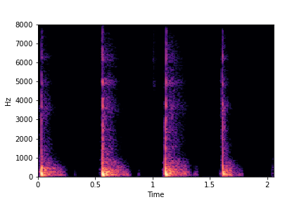
N=8
(4 per cluster)
(4 per cluster)
N=10
(5 per cluster)
(5 per cluster)
Impact Type (sounds become scratchier from left to right)
N=2
(1 per cluster)
(1 per cluster)
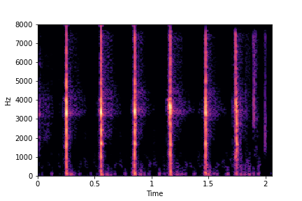
N=4
(2 per cluster)
(2 per cluster)
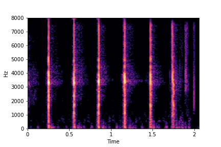
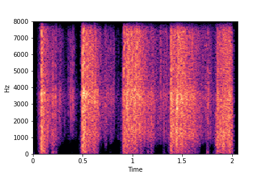
N=6
(3 per cluster)
(3 per cluster)
N=8
(4 per cluster)
(4 per cluster)
N=10
(5 per cluster)
(5 per cluster)
Ablation studies - Effect of the value of Scalar $\boldsymbol{\alpha}$
In this section, we evaluate the effect of the scalar $\alpha$ in equation (4) in the paper.
$$ \mathbf{w_{edited}} = \mathbf{w} + \boldsymbol{\alpha} * \mathbf{d} $$
Where $\mathbf{d}$ is the $direction$ vector between the two prototypes. For all examples on this Supplementary webpage, we use - $$ 0 < \boldsymbol{\alpha} < 1$$ In this section we show the effect of using steps greater than $1$. We see that as the value of $\boldsymbol{\alpha}$ moves further away from $1 * \mathbf{d}$, the samples tend to go out of distribution.
$$ \mathbf{w_{edited}} = \mathbf{w} + \boldsymbol{\alpha} * \mathbf{d} $$
Where $\mathbf{d}$ is the $direction$ vector between the two prototypes. For all examples on this Supplementary webpage, we use - $$ 0 < \boldsymbol{\alpha} < 1$$ In this section we show the effect of using steps greater than $1$. We see that as the value of $\boldsymbol{\alpha}$ moves further away from $1 * \mathbf{d}$, the samples tend to go out of distribution.
sample 1
(Editing Brightness)
(Editing Brightness)
sample 2
(Editing Brightness)
(Editing Brightness)
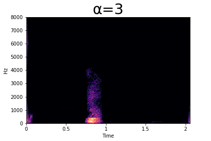
sample 3
(Editing Impact Type)
(Editing Impact Type)
sample 4
(Editing Impact Type)
(Editing Impact Type)
sample 5
(Editing Rate)
(Editing Rate)
sample 6
(Editing Rate)
(Editing Rate)
sample 7
(Editing Water Fill-Level)
(Editing Water Fill-Level)
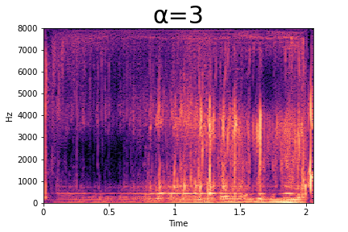
Experimental Setup
StyleGAN2 Training Details
We set Z and W space dimensions both to 128 for all our
experiments across the two datasets. We also use only 4 mapping layers (as compared to 8 in the
original StyleGAN2 paper).
Further, we use the log-magnitude spectrogram
representations generated using a Gabor
transform(n_frames=256, stft_channels=512,
hop_size=128), a Short-Time Fourier Transform (STFT) with a Gaussian window, to train the
StyleGAN2 and the Phase Gradient Heap Integration (PGHI) for
high-fidelity spectrogram inversion of textures to audio. For Greatest
Hits dataset, we train the models for 2800kimgs with a batch size of 16, taking ~20 hours
to train on a single RTX 2080 Ti GPU with 11GB memory. For Water Filling dataset, we train for
1400kimgs with the same batch size running for ~14 hours on the same GPU. The metrics for
quality of the generated sounds in terms of Frechet Audio Distance
(FAD) along with the StyleGAN2 code adapted for audio textures can be
found below.
Table: StyleGAN2 Frechet Audio Distance (FAD)
| Dataset | w-dim & z-dim | Number kimgs (iterations) | FAD Score |
|---|---|---|---|
| Greatest Hits Dataset | 128 | 2800 | 0.6 |
| Water Filling Dataset | 128 | 1400 | 1.17 |
Encoder/GAN Inversion Training Details
We use a RestNet-34 backbone as the architecture for our GAN inversion
network. For both datasets, we train the Encoder for 1500 iterations with a batch size of 8 and
choose the checkpoint with the lowest validation loss for inference. As in the original GAN
Encoder paper we use an Adam optimizer with learning rate of 0.0001.
Further, for the Water dataset, we apply a thresholding of -17db, i.e. we mask the frequency
components with magnitude below -17db. For both datasets, the training took ~25 hours to
complete on a single GPU.
Table: GAN Inversion/Encoder (netE) Frechet Audio Distance (FAD) (w/ Thresholding)
| Dataset | Number kimgs (iterations) | Gaver Sounds FAD Score | Real-World Sounds FAD Score |
|---|---|---|---|
| Greatest Hits Dataset | 1500 | 4.16 | 2.83 |
| Water Filling Dataset | 1500 | 7.92 | 1.42 |
Gaver Sound Synthesis
To model impact sounds, such as those in the Greatest Hits dataset, we use a combination of
sounds synthesized using method 1 and 2. For method 1, we choose damping constant
δn=0.001 for hard surfaces and δn=0.5 for soft surfaces. We
provide variations
in the generated sounds by using different impact surface sizes, φ and n (number of
partials). We vary the first partial of ω between 60-240Hz for large impact surfaces and
between 250-660Hz for smaller surfaces. For method 2, we vary the impulse width of each impact
between 0.4 - 1.0 seconds to model scratches and between 0.1 - 0.4 seconds to model sharp
hits. Further, we model dull sounds by configuring low frequency bands roughly between
10-1.5kHz and bright sounds using frequency bands above 4kHz. Water filling Gaver sounds are
modelled as a combination of multiple impulses (modelled as individual water drops) concatenated
with each other. We generate each drop using method 1 with an impulse width of 0.05 seconds.
Each fill-level is controlled by linearly increasing or decreasing ω and its partials
across the sound sample.
In all our experiments, we use 10 synthetic Gaver examples (5 per semantic attribute cluster) to
generate the guidance vectors for controllable generation. Please see the
for ablation studies section of this webpage for generating guidance vectors using different
number of Gaver samples. Our
code repository has all the Gaver configurations we used in our experiments.
UMAP Clusters for Real and Synthetic Sounds based on semantic attributes
This section shows the UMAP clusters for the Greatest Hits dataset for the attributes of
Brightness, Impact Type and Rate. The clusters are generated for both
Real sounds (from the training dataset) as well as Gaver sounds.
We find the W-vector for each sound using the Encoder. We then run UMAP algorithm (something like t-SNE) on the W-vectors to find the clusters.
Notice how separable the clusters for each attribute are. Also, see how the clusters for the synthetic sounds are similar to the real sounds.
We find the W-vector for each sound using the Encoder. We then run UMAP algorithm (something like t-SNE) on the W-vectors to find the clusters.
Notice how separable the clusters for each attribute are. Also, see how the clusters for the synthetic sounds are similar to the real sounds.
Codebase
Encoder (GAN Inversion) adapted for audio codebase: https://github.com/pkamath2/audio-latent-composition
The Encoder repository also contains the code for generating prototypes and attribute guidance vectors.
StyleGAN2 adapted for audio codebase: https://github.com/pkamath2/audio-stylegan2
The Encoder repository also contains the code for generating prototypes and attribute guidance vectors.
StyleGAN2 adapted for audio codebase: https://github.com/pkamath2/audio-stylegan2
Re-scoring Classifier Details
Architecture Details
We use a classifier based on this paper.
For the classifier we use a DenseNet (with pre-training) based network, where the last layer is
modified
depending upon the number of classes we need. For binary re-scoring analysis the number of
classes is 2 (to
indicate presence of absence of the semantic attribute).
The input to the classifier are 3 mel-spectrograms appended along the channel axis. As in the
original paper, we follow this method
to capture information at 3 different time scales, i.e. we
compute mel-spectrogram of a signal using different window sizes and hop-lengths of [25ms,
10ms], [50ms, 25ms], and [100ms, 50ms] for each channel respectively. The different window sizes
and hop-lengths ensure the network has different levels of information from the frequency and
time domain on each channel. We use Adam optimizer
while training with a learning rate of 0.0001, weight decay of 0.001 and train for 100 epochs.
The codebase for the classifier can be found here: Audio-Classification Github Fork
The codebase for the classifier can be found here: Audio-Classification Github Fork
Curated Dataset for Training Re-Scoring Classifier
To train the attribute re-scoring classifier, we manually curate and label a small dataset, from
both Greatest Hits and Water Filling datasets.
We use this classifier to quantitatively evaluate the
effectiveness of our method in comparison with SeFa. For this, we manually curate approximately
250 samples of 2
seconds sounds for each semantic attribute from both the datasets. This manual curation involved
visually analysing the video and auditioning the associated sound files to detect the semantic
attribute being curated. For Brightness, we manually curated a set
of bright sounds from hits made on dense material surfaces such as glass, tile, ceramic or metal
to indicate the presence of the brightness attribute. And a set of dull or dark sounds made by
impacts on soft materials such as cloth, carpet or paper to indicate an absence of the
brightness attribute. For Rate we curated sound samples with just 1-2 impact
sounds in a sample to indicate low-rate and all other samples as high-rate. For
Impact Type, we curated a set of sound samples where the drumstick sharply hit
the surface and another set of sounds where the drumstick scratched the surface. For
Fill-Level for Water, we curated the sounds by sampling the first and last ~3
seconds of each file from the original dataset
(of ~30 seconds length files) to indicate
an empty bucket and a full bucket. These datasets are used to train attribute
change or re-scoring classifiers during evaluation.
Discussion: Approaching semantic edits using text-to-audio models (Paper Section
VI)
Although we are unable to perform a systematic comparison of our method with text-to-audio
models, in this section we
demonstrate some text prompts that assist in achieving the semantic editing goals of our
framework using text-to-audio models such as AudioGen and
AudioLDM. For impact sounds, we designed prompts by describing
the material properties of the impact surface, along with certain acoustic properties of the
sound. Similarly, for water filling, we described the material properties of the container as
well as the fill level of the water.
In the examples below, we begin with one prompt, and continuously edit it with additional textual descriptions of how we want to modify the sounds.
For impact sounds, observe how adding regularity and rate (and very fast) edits to the prompt, unintentionally also changes other attributes such as brightness.
Note: These examples are not intended to be a systematic study or comparison of our method to text-to-audio. We only show these examples here to highlight some differences between these results and ours, and thus pave the way for our future work.
In the examples below, we begin with one prompt, and continuously edit it with additional textual descriptions of how we want to modify the sounds.
For impact sounds, observe how adding regularity and rate (and very fast) edits to the prompt, unintentionally also changes other attributes such as brightness.
Note: These examples are not intended to be a systematic study or comparison of our method to text-to-audio. We only show these examples here to highlight some differences between these results and ours, and thus pave the way for our future work.
Prompt:
"stick hitting a very hard metal surface"
"stick hitting a very hard metal surface"
Prompt:
"stick hitting a very hard metal surface
with resonance and long sustain"
"stick hitting a very hard metal surface
with resonance and long sustain"
Prompt:
"stick hitting a very hard metal surface
with resonance and long sustain
and regularity"
"stick hitting a very hard metal surface
with resonance and long sustain
and regularity"
Prompt:
"stick hitting a very hard metal surface
with resonance and long sustain
and regularity
and very fast"
"stick hitting a very hard metal surface
with resonance and long sustain
and regularity
and very fast"
Samples from AudioGen
Samples from AudioLDM
For water filling, as we are interested in continuously editing the fill level, we edit the prompts using a start fill level and and end fill level.
For the prompts used below, AudioGen performs comparitively better than AudioLDM in terms of the quality of the generated sounds.
Note: These examples are not intended to be a systematic study or comparison of our method to text-to-audio. We only show these examples here to highlight some differences between these results and ours, and thus pave the way for our future work.
Prompt:
"water filling a metal container that is
empty until it is quarter full"
"water filling a metal container that is
empty until it is quarter full"
Prompt:
"water filling a metal container that is
quarter full until it is half full"
"water filling a metal container that is
quarter full until it is half full"
Prompt:
"water filling a metal container that is
half full until it is three-fourths full"
"water filling a metal container that is
half full until it is three-fourths full"
Prompt:
"water filling a metal container that is
three-fourths full until it is completely full"
"water filling a metal container that is
three-fourths full until it is completely full"
Samples from AudioGen
Samples from AudioLDM